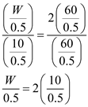

Step 1:
Refer to Figure 8.41 in the text book.
From the circuit shown in Figure 8.41. it is clear that the reference current is,
The reference current flowing through  is mirrored in
is mirrored in  and
and  .
.
The bias current flowing in  is equal to the current flowing in
is equal to the current flowing in  that is,
that is,

Hence the bias currents flowing in ,
,  ,
,  and
and are equal that is
are equal that is
.
Step 2:
Step 3:
Now for the Operational amplifier to not have a systemic offset voltage, we know that the ratio of  of the transistors must be related by the expression
of the transistors must be related by the expression
Substitute for ,  for , for
for , for  and for in equation.
and for in equation.
Substituting the values of the  of various devices from the table above, we get
of various devices from the table above, we get

Hence the of the transistor  is .
is .
The bias current is related to the over drive voltage by the expression
Where,  is the over drive voltage of a transistor, which has a certain according to the material used for preparing the device.
is the over drive voltage of a transistor, which has a certain according to the material used for preparing the device.
Substitute of  , for in equation.
, for in equation.
Hence, the over drive voltage for the device  is
is  .
.
Similarly, the values of  .
.
The over drive voltage  is related to the gate source voltage and the thermal voltage by the expression
is related to the gate source voltage and the thermal voltage by the expression
,
where,  is the gate source voltage, and
is the gate source voltage, and  is the thermal voltage of the device.
is the thermal voltage of the device.
For the  , the gate source voltage is,
, the gate source voltage is,
The gate source  .
.
Step 4:
As the overdrive voltages of all the devices are equal the gate source voltages will also be equal, that is,
.
The transconductance  of a device is given by the expression,
of a device is given by the expression,

Step 5:
The transconductance of

is,
Hence, the transconductance of the device  is .
is .
As the currents of  ,
, ,
, and
and are equal, their transconductance will be the same,
are equal, their transconductance will be the same,
.
Step 6:
The transconductance of  is,
is,
Hence, the transconductance of the device  is .
is .
As the currents of  ,
, ,
, and
and are equal, their transconductance will be the same,
are equal, their transconductance will be the same,
.
Step 7:
The output resistance of a device is given by the expression,
For the transistor  the output resistance is,
the output resistance is,
Hence the output resistance is .
As the currents of  ,
, ,
, and
and are equal, their output resistances will be equal, that is .
are equal, their output resistances will be equal, that is .
Step 8:
For the transistor  the output resistance is,
the output resistance is,
Hence the output resistance is .
As the currents of  ,
, ,
, and
and are equal, their output resistances will be equal, that is .
are equal, their output resistances will be equal, that is .
Step 9:
The gain of the first stage of the two stage operational amplifier is,
Similarly, the gain of the second stage of the two stage operational amplifier is,
The overall open loop DC gain is,
Hence the open loop DC gain of the device is .
Step 10:
The lower limit of the input common mode is the value of the input voltage at which the transistors

and

leave the saturation region, this happens when the output at the drain falls by one volt below the of the device.
The drain voltage of the  is,
is,
Hence the lower limit of the input common mode range is,
s
The lower limit of the input common mode range is .
Step 11:
The upper limit of the input common mode is the value of the input voltage at which the transistor  leaves the saturation region. Since for
leaves the saturation region. Since for  to operate in saturation, the voltage across it must at least be equal to the over drive voltage at which it is operating, that is,
to operate in saturation, the voltage across it must at least be equal to the over drive voltage at which it is operating, that is,
Hence the input range of the operational amplifier is .
Step 12:
The highest allowable output voltage is the value at whichleaves saturation, that is
The lowest value of the output voltage is the value at which leaves saturation, that is
Hence, the output voltage range is,
Hence the output range of the operational amplifier is  .
.
 is then divided equally in
is then divided equally in  ,
, ,
, and
and , that is
, that is  ,
, ,
, and
and is
is